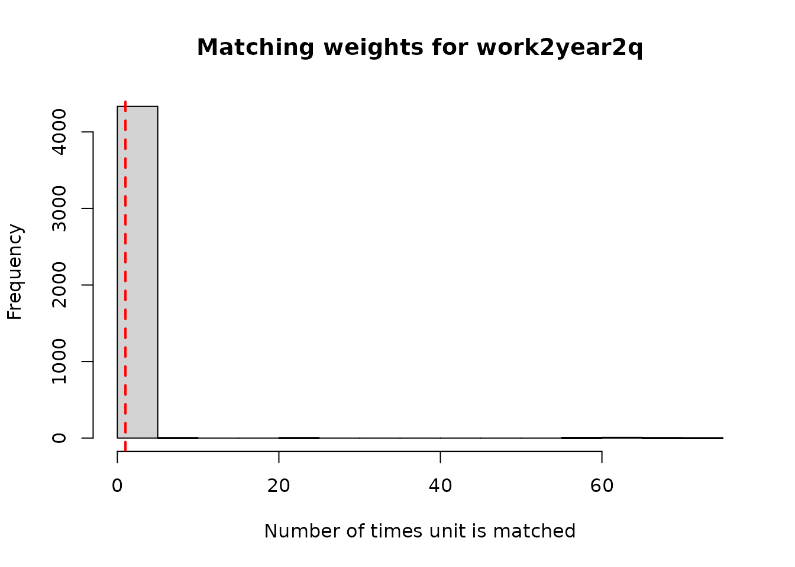

Telescope matching
2024-09-23
Source:vignettes/articles/telescope_matching.Rmd
telescope_matching.RmdThis vignette illustrates the telescope matching method developed in
Blackwell and Strezhnev (2021) as implemented in the
telescope_matching routine. One drawback of sequential
g-estimation or other model-based estimators is that they depend on
correctly specifying two regression models: one for the effect of the
mediator given treatment and pre-/post-treatment covariates and another
for the effect of treatment given pre-treatment covariates. Telescope
matching provides a more flexible and less model-dependent estimation
strategy for controlled direct effects when the treatment and mediator
are binary. It combines a two-stage matching procedure to impute the
unobserved counterfactuals with a bias-correction to account for biases
induced by imperfect matches.
Estimation by telescope matching
Telescope matching provides an alternative, less model-dependent approach to estimating the average controlled direct effect when both treatment and mediator are binary. The average controlled direct effect of interest is the effect of treatment versus control ( vs. ) holding constant the mediator at ().
Identification still depends crucially on the sequential unconfoundedness assumption Assumption 1, which states that there are no unobserved confounders of and given pre-treatment covariates and that there are no unobserved confounders of and given treatment , pre-treatment covariates and post-treatment covariates . We can understand the process of estimating the ACDE as an imputation problem. Our estimator of the ACDE, is simply the average of imputed potential outcomes for each unit in the sample.
To obtain the imputations
and
for each unit, the telescope matching approach proceeds in two stages.
The first step matches each unit with
to some user-specified number of units with
that share treatment status
and are similar in both pre-treatment covariates
and post-treatment covariates
as measured by some distance metric (in telescope_match we
implement the Mahalanobis distance). Let
denote the set of units matched to unit
.
We define the following imputation for each unit’s potential outcome
fixing
to 0.
In the second step, we match each unit to some number of units of the opposite treatment status with similar values of pre-treatment covariates Let denote the set of units matched to unit such that for all . We then use the first-stage imputations for either unit or its second-stage matches to impute the potential outcomes for each unit under treatment and control fixing the mediator to .
Since matching is done with replacement, units may be used multiple times. We define as the number of times that unit is used as a match in stage and . Moreover, since units with contribute indirectly to second stage matches we define to denote the number of times a unit with matched to a unit with is implicitly used as a match in the second stage. This allows us to re-write the simple matching estimator as a weighted average where the weight is defined as
These weights can be used as a diagnostic for assessing the variance
of the estimator and whether particular observations have an extreme
influence on the estimate through large weights, resulting in large
variances. The telescope_match function returns each of the
constituent matching counts along with the combined matching “weight” on
each observation for use in diagnostic plots.
Bias correction for matching
Matching estimators with a fixed number of matches exhibit bias even in large samples due to differences in the regression function between units and their matches evaluated at their respective covariate values Abadie and Imbens (2011). While this bias converges in probability to as the sample size grows, the rate of convergence is slow enough that the bias terms dominate the distribution To address this, matching estimators for treatment effects typically incorporate a bias correction which adjusts the matched values by the estimated difference in regression functions. We incorporate a similar approach for correcting matching bias in our two-stage procedure.
The bias of the simple matching estimator for consists of two terms, a bias due to matching on the mediator () and a bias due to matching on treatment ()
Where
and
denote the conditional expectations of the potential outcomes given two
different conditioning sets (with and without
).
Under sequential ignorability,
.
The method implemented in telescope_match extends the bias
correction strategy of Abadie and Imbens (2011) to the two-stage setting. It
estimates the two conditional expectation functions using regression
estimators
and
.
As shown in Blackwell and Strezhnev (2021), if the regression estimators are
consistent for the true regression functions, then the estimated bias
correction converges to the true bias. The rate of convergence is fast
enough such that the bias can be ignored asymptotically.
Inference
Obtaining valid standard errors in the matching context is difficult as matching with replacement induces dependencies between imputed potential outcomes. We provide two approaches for estimating standard errors. The first implements a version of the Otsu and Rai (2017) wild bootstrap for matching estimators, extended to the two-stage setting. The second (default) approach estimates the components of the asymptotic variance derived in Blackwell and Strezhnev (2021).
Empirical illustration of telescope matching
In this section, we illustrate the implementation of the telescope matching estimator as applied to the Job Corps experiment data used in Huber (2014) to estimate the effect of a randomized job training program on self-assessed health holding constant the intermediate outcome of employment.
The data is supplied along with the package.
data(jobcorps)-
is an indicator for whether participants reported “very good” health
after 2.5 years out after randomization (
exhealth30) -
is an indicator for assignment to the job training program
(
treat) -
is an indicator for employment 1 to 1.5 years after assignment
(
work2year2q) -
are the post-treatment, pre-mediator intermediate confounders
(
emplq4,emplq4full) -
are the pre-treatment characteristics (
chobef,trainyrbef,jobeverbef)
The original Huber (2014) paper looks at separate controlled effects for female and male participants. We start by subsetting the dataset down to the female participants
jobcorps_female <- subset(jobcorps, female == 1)We define the two formula objects used for matching, the first including all pre- and post-treatment covariates and along with all treatment-covariate interactions. The second includes only the pre-treatment covariates and treatment-covariate interactions. Here, we include only a subset of the covariates used by Huber (2014) in their analysis.
## Telescope matching formula - First stage (X and Z)
tm_form <- exhealth30 ~ schobef + trainyrbef + jobeverbef | treat |
emplq4 + emplq4full | work2year2qThe telescope_match() function can handle additional
mediators and intermediate covariates by simply adding them to the end
of the formula in the same manner as these two groups. We then pass this
formula to the function itself:
### Estimate ACDE for women holding employment at 0
tm_out <- telescope_match(tm_form, data = jobcorps_female, L = 3)## Beginning matching...## Matching work2year2q...## Matching treat...## Beginning bias correction...The summary() function will print the output (estimate
and standard errors) to the console for each of the possible controlled
direct effects. This function also provides some summaries of the
matching output. The elements of the output can be accessed directly
from the returned tmatch object.
# Prints the summary output
summary(tm_out)## Telescope matching results
## ----------------------------
##
## Call:
## telescope_match(formula = tm_form, data = jobcorps_female, L = 3)
##
## Active treatment: treat
## Controlled treatment(s): work2year2q
##
## Matching summary:
## Term Matching Ratio L:1 N == 1 N == 0 Matched == 1 Matched == 0
## 1 treat 3 2801 1551 2273 1546
## 2 work2year2q 3 2559 1793 1355 1497
##
##
## Summary of units matching contributions:
## Min. 1st Qu. Median Mean 3rd Qu. Max.
## treat 0 0.3333333 0.6666667 1 1.333333 5.00000
## treat:work2year2q 0 0.0000000 0.3333333 1 1.000000 116.88889
## work2year2q 0 0.0000000 0.3333333 1 1.333333 72.66667
##
##
## Estimated controlled direct effects of treat:
## work2year2q Estimate Estimate (no BC) Std. Err.
## (1, 0) vs. (0, 0) 0 -0.08482 -0.07573 0.05231
## (1, 1) vs. (0, 1) 1 0.02369 0.02367 0.02285
# The coefficients + SE can be accessed directly as well
tm_out$tau # Point estimate## [1] -0.08481891 0.02368883
tm_out$tau_se #Standard error## [1] 0.05231118 0.02284633Additional diagnostics can be conducted by calling the
balance.tmatch() function on the returned
tmatch object to assess the change in pre-/post-matching
covariate balance in both the first and second stages.
## Assess mediator balance on selected pre- and post- treatment covariates
balance.tmatch(tm_out, vars = work2year2q ~ schobef + emplq4,
data = jobcorps_female)## variable before_0 before_1 after_0 after_1 before_sd before_diff
## schobef schobef 0.6352482 0.6287612 0.7033548 0.6314338 0.4824714 -0.006486953
## emplq4 emplq4 0.1996654 0.7198124 0.4771752 0.5057445 0.5000270 0.520147061
## before_std_diff after_diff after_std_diff
## schobef -0.01344526 -0.07192096 -0.14906782
## emplq4 1.04023787 0.02856924 0.05713539
## Assess treatment balance on selected pre-treatment covariates
balance.tmatch(tm_out, vars = treat ~ trainyrbef + hhsize,
data = jobcorps_female)## variable before_0 before_1 after_0 after_1 before_sd
## trainyrbef trainyrbef 0.01676338 0.01713674 0.01700368 0.01700368 0.1292996
## hhsize hhsize 4.54094133 4.53802213 4.55935968 4.53592218 2.2087850
## before_diff before_std_diff after_diff after_std_diff
## trainyrbef 0.0003733584 0.002887544 0.0000000 0.00000000
## hhsize -0.0029191932 -0.001321629 -0.0234375 -0.01061104Calling the plotDiag.tmatch() function will return a
histogram of the number of times each unit is used as a match
()
in either the first (mediator) stage or the second (treatment)
stage.
# Number of times each unit is used as a match in the mediator (first) stage
plotDiag.tmatch(tm_out, stage = "work2year2q")
# Number of times each unit is used as a match in the treatment (second) stage
plotDiag.tmatch(tm_out, stage = "treat")